Membuat Wallet di Metamask
Ditulis oleh : Fandi Adinata
pada 17 Juli 2026 19:44 WIB
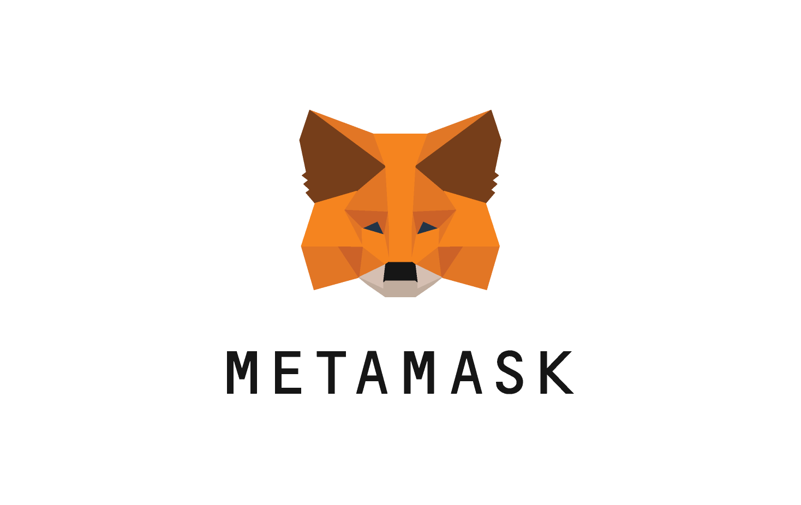
Apa itu Metamask?
Metamask adalah sebuah dompet (wallet) cryptocurrency berbasis perangkat lunak yang tersedia sebagai ekstensi browser maupun aplikasi mobile.
Sebuah wallet memungkinkan pengguna untuk menyimpan, mengirim, dan menerima aset kripto.
Wallet juga mampu berinteraksi dengan berbagai aplikasi terdesentralisasi (Decentralized Applications atau dApps) yang berjalan di berbagai jaringan blockchain seperti Ethereum dan BNB Chain, serta layer-2 diatasnya seperti Polygon, serta jaringan lain yang kompatibel dengan Ethereum Virtual Machine (EVM).
Bagi seorang developer blockchain ataupun Web3, Metamask merupakan salah satu alat yang hampir selalu digunakan selama proses pengembangan aplikasi.
Beberapa fungsi dari wallet seperti menghubungkan aplikasi dengan blockchain, menandatangani transaksi dan pesan digital, menguji smart contract, hingga berinteraksi dengan dApps seperti DEX maupun NFT menjadikan Metamask sebagai salah satu wallet standar bagi developer Web3.
Pada tutorial ini, kita akan membuat wallet Metamask menggunakan ekstensi browser Opera.
Langkah-langkah yang dijelaskan juga dapat diterapkan pada browser lain yang mendukung ekstensi berbasis Chromium, seperti Google Chrome, Microsoft Edge dan Brave.
Langkah-langkah
Dalam pembuatannya, penulis membagi menjadi bagian instalasi dan pembuatan wallet.
1. Instalasi
Bukan icon "ekstensi" di browser. Biasanya berada di bagian kanan atas tampilan browser. Kemudian klik "Manage Extension".
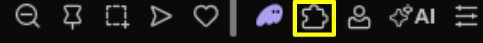
Kemudian klik "Get More Extension". Di sini, Anda akan dialihkan ke halaman yang berisi daftar ekstensi browser yang dapat Anda install dan gunakan di browser Anda.
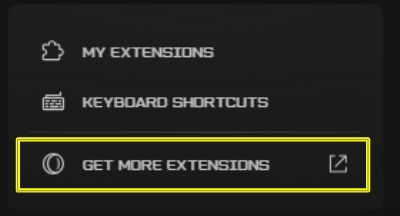
Cari "MetaMask" di kolom pencarian dan klik "yang ada rubahnya".
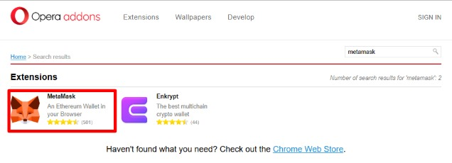
Di laman detail ekstensi, klik "Add to Opera" atau sejenisnya.
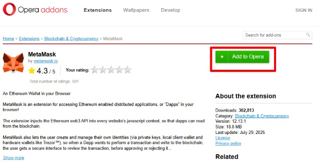
Setelah terinstal, klik kembali icon "ekstensi" dan kemudian klik icon "pin" supaya nantinya tidak susah mencari Metamask Anda.
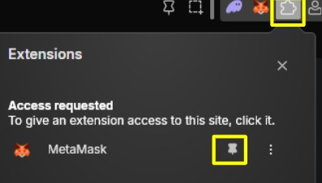
2. Pembuatan wallet
Pada saat pertama kali, Anda akan dialihkan ke halaman pendaftaran wallet Metamask. Centang "I agree" dan klik "Create a new wallet". Kemudian klik lagi "I agree".
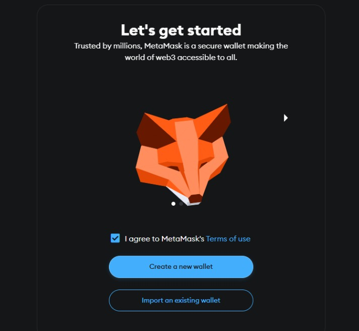
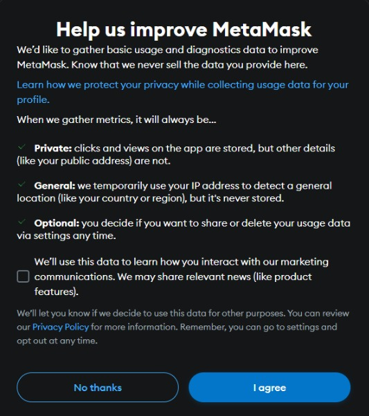
Buat password untuk wallet Metamask Anda. Biasanya setelah Anda lama tidak membuka wallet, Metamask akan secara otomatis menonaktifkan wallet sehingga Anda perlu memasukkan password kembali. Hal ini juga mencegah akun Anda dipakai oleh orang lain.
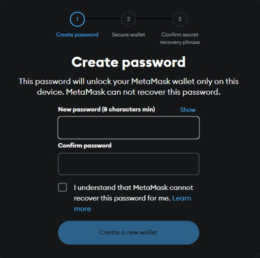
Sebelum melanjutkan, siapkan sebuah kertas dan pulpen atau pensil untuk menyimpan recovery phrase.
Ini adalah daftar 12 kata yang digunakan sebagai dasar pembentukan private key untuk membuat wallet Anda.
Jangan pernah memberikan recovery phrase ke orang lain.
Jika sudah siap, klik "Secure my wallet".
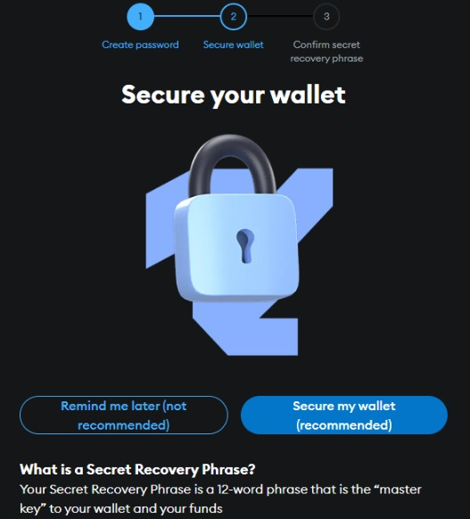
Setelah Anda menulis semua recover phrase, Anda perlu melakukan konfirmasi ulang dengan mengisi tiap kata sesuai dengan urutan.
Setelah wallet Anda terkonfirmasi, Selamat, wallet Metamask Anda telah berhasil dibuat.
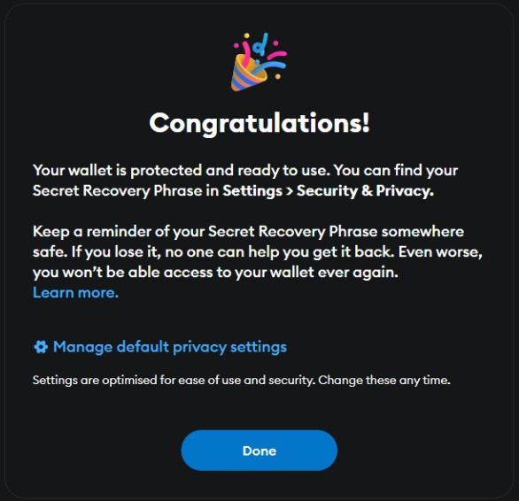
Untuk membuka wallet Anda, klik saja icon ekstensi "metamask" di bagian atas browser.
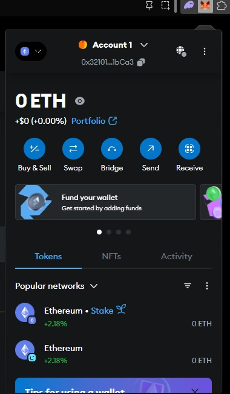
Penutup
Dengan demikian, Anda telah berhasil untuk membuat wallet di Metamask melalui browser. Dalam tutorial berikutnya, penulis akan membagikan cara mengirim, dan menerima cryptocurrency di wallet Metamask.